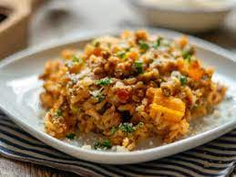

ODIN RECIPES

RISOTTO MEAT
INGREDIENTS
1 cup of rice
half onion
2 tomatoes
half of bell pepper
100ml of olive oil
500g of Meat
200ml of bordo wine
3 head of garlic
200 ml of milk cream
PREPARATION
First you need grease the pan with the olive oil
Saute half potion of garlic, onions, tomatoes and bell pepper
When the greens starts to be soft you put the rice and
put 3 cups of water, and keep replenish of water until the rice is cooked
When the rice is cooking you pick another pan, and fried the MEAT with the
other half potion of greens
When the rice is about to be cooked you add the meat with the rest of greens
and put the 200ml of bordo wine, and 200ml of milk cream, then close.
Everething will be ready at 10 min of fire.
NOTE:
That`s will give 5 potions
 CESAR SALAD
INGREDIENTS
CESAR SALAD
INGREDIENTS
1/2 cup high-quality extra virgin olive oil, plus more for brushing
4 cloves garlic, minced
1 baguette, preferably a day old, thinly sliced
1/4 cup fresh lemon juice (plus more to taste)
4 ounces Parmesan cheese, grated
1 teaspoon anchovy paste, or 1 to 2 anchovies, minced
2 large eggs
1/4 teaspoon freshly ground black pepper (or to taste)
1/2 teaspoon kosher salt (or to taste)
4 to 6 small heads romaine lettuce, rinsed, patted dry, wilted outer leaves discarded
PREPARATION
1- Combine the olive oil and garlic:
In a very large bowl, whisk together 1/2 cup olive oil and garlic. Let sit for at least half an hour.
2- Make the toasted croutons:
While the garlic is sitting, make the croutons. Spread the baguette slices out on a baking sheet. (You may need to do in batches.)
Brush or spray with olive oil (or melted butter). If you want garlicky croutons, dip pastry brush in the garlic infused oil you have sitting in Step 1.
Broil for a couple of minutes until the tops are lightly browned. (Note: do not walk away, these can easily go from browned to burnt.) Remove and let cool.
The steps up until this point can be made ahead.
3- Make the dressing:
Add minced anchovies (or anchovy paste, if using) and eggs to the oil-garlic mixture. Whisk until creamy. Add salt and pepper and 1/4 cup of lemon juice. Whisk in half of the Parmesan cheese. Taste, add more lemon juice, salt and pepper to taste. The lemon should give an edge to the dressing, but not overwhelm it.
4- Tear off the chunks of romaine lettuce:
Using your hands, tear off chunks of lettuce from the heads of romaine lettuce (do not use a knife to cut). Add to the dressing and toss until coated. Add the rest of the Parmesan cheese, and toss.
5- Combine and serve:
Coarsely chop the toasted bread into croutons and add to the salad. Brush in any crumbs from chopping the bread, too. Toss and serve immediately.
NOTE
NUTRITION FACTS
(PER SERVING);
709
CALORIES;
34g
FAT;
81g
CARBS;
27g
PROTEIN
INGREDIENTS
SUGAR
seasoning
and everything of good
and then a bit of X-element
PREPARATION
Put everything in a cauldron, and with a bit of luck and time is ready
NOTE:
Will you get 3 powerful cute little girls